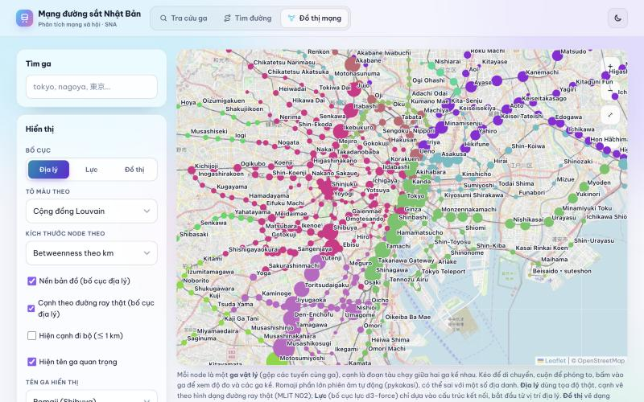

Phân tích mạng xã hội · Bài cá nhân · Bản đầy đủ
Mạng lưới ga tàu Nhật Bản
dưới góc nhìn SNA
Từ dữ liệu ga, tuyến thật → đồ thị có hướng ≈ 52 nghìn bản ghi → độ đo mạng → web tra cứu ga, tìm đường và trực quan hóa.
Phím ← → để chuyển slide · F toàn màn hình · T đổi sáng/tối · tên tiếng Nhật kèm romaji (phiên âm) và nghĩa tiếng Việt.
Mục tiêu
Bài toán và câu hỏi nghiên cứu
Đề bài
- Node = ga tàu; cạnh có hướng = có tàu chạy từ ga này sang ga kế tiếp.
- Thông tin thêm: tuyến, ga cuối (terminal) theo hướng chạy, công ty vận hành, loại tuyến, thời gian chạy, loại tàu, giá vé.
- Quy mô ≈ 50.000 bản ghi (node + cạnh).
- Web HTML đọc CSV: tra cứu ga A nối với ga nào; nhập A, B → lộ trình.
- Chỉ dùng dữ liệu thật, không ước tính; thiếu thì để trống.
Câu hỏi nghiên cứu
- Q1. Ga nào là cầu nối giữa các vùng? Có khác nhau khi đo theo số chặng và theo km không?
- Q2. Ga nào là đầu mối trung chuyển lớn nhất?
- Q3. Mạng tự chia thành những cộng đồng nào, có khớp vùng địa lý / hệ thống tuyến không?
- Q4. Mạng có liên thông không, đường đi giữa hai ga dài bao nhiêu?
Tổng quan
Quy trình: crawl → xử lý → tính độ đo → web
Ngôn ngữ & thư viện
Python: requests, pandas, networkx, python-louvain, scipy, pykakasi.
Lưu trữ
Phản hồi API thô lưu cache trong data/raw/; kết quả xử lý là các file CSV trong data/.
Web
HTML tĩnh đọc CSV bằng PapaParse; bản đồ Leaflet + OpenStreetMap; đồ thị vẽ canvas + d3.
Lấy dữ liệu
Ba nguồn chính thức, mỗi nguồn bổ sung phần còn thiếu của nguồn kia.
Lấy dữ liệu
Ba nguồn dữ liệu chính thức
| Nguồn | Lấy được gì | Phạm vi | Trạng thái |
|---|---|---|---|
| HeartRails Express API express.heartrails.com | Tên ga, tuyến, tỉnh, tọa độ, mã bưu chính, ga trước / ga sau (thứ tự trên tuyến) | Toàn quốc | Đã crawl |
| MLIT N02 国土数値情報 Kokudo Sūchi Jōhō (Dữ liệu số đất đai quốc gia, Bộ Đất đai – Hạ tầng – Giao thông NB) | Công ty vận hành, loại tuyến (JR / tư nhân / tàu điện ngầm / monorail…) | Toàn quốc, giấy phép CC BY 4.0 | Đã tải & ghép |
| ODPT Open Data for Public Transportation | Giờ tàu thật (thời gian chạy từng chặng), loại tàu, giá vé chính thức giữa hai ga | Chủ yếu vùng Kanto | Code xong · chờ key |
Nguyên tắc: cột nào nguồn chính thức không có thì để trống; web hiển thị “Chưa có dữ liệu chính thức” thay vì tự ước tính. Yahoo! 乗換案内 (Norikae Annai) (dịch vụ tìm đường chuyển tàu) không có API công khai và robots.txt chặn crawl, nên không dùng.
Lấy dữ liệu · src/01_crawl_heartrails.py
Crawl HeartRails theo 3 cấp API
| API | Số request |
|---|---|
getPrefecturesdanh sách 47 tỉnh | 1 |
getLines?prefecture=tuyến theo từng tỉnh, gộp trùng | 47 |
getStations?line=ga theo từng tuyến | 598 |
| Tổng | 646 |
- Giới hạn tốc độ, tự thử lại khi lỗi mạng.
- Mỗi phản hồi lưu cache (tên file = MD5 của URL);
--resumechạy tiếp, không gọi lại. - Kết quả: 10.390 dòng ga–tuyến.
# GET /api/json?method=getStations&line=JR山手線 { "response": { "station": [ { "name": "渋谷", // Shibuya "prefecture": "東京都", // Tokyo "line": "JR山手線", // tuyến JR Yamanote "x": 139.701238, "y": 35.658871, "postal": "1500043", "prev": "恵比寿", // ga trước: Ebisu "next": "原宿" }, // ga sau: Harajuku ... ] } }
prev / next chính là thông tin dùng để dựng cạnh có hướng giữa hai ga kề nhau. Ga có prev hoặc next rỗng là ga đầu/cuối tuyến (terminal).
Lấy dữ liệu · src/02_fetch_mlit_n02.py
MLIT N02: công ty vận hành, loại tuyến, km đường ray
Tải về và đọc
Tải file N02-25_GML.zip, đọc lớp Station (ga) và RailroadSection (21.933 đoạn ray). Các trường dùng:
N02_001 | 鉄道区分 tetsudō kubun (phân loại kỹ thuật: đường sắt thường, tàu điện mặt đường…) |
N02_002 | 事業者種別 jigyōsha shubetsu (loại doanh nghiệp: JR, tư nhân, công lập…) |
N02_003 | Tên tuyến |
N02_004 | Công ty vận hành |
N02_005 | Tên ga |
Ghép với HeartRails
- Cùng tên ga và cách nhau ≤ 1 km, rồi chọn tuyến có tên giống nhất.
- Tuyến Shinkansen (tàu cao tốc) chỉ được ghép với Shinkansen, tránh lỗi 東海道新幹線 Tōkaidō Shinkansen bị ghép nhầm sang 東海道線 Tōkaidō-sen.
- Xử lý ngoại lệ: Osaka Metro (pháp lý là “軌道” kidō (đường ray kiểu tàu điện)), tàu điện ngầm Sapporo bánh cao su, tàu điện 都電荒川線 Toden Arakawa.
02b_rail_geometry.py)Lấy dữ liệu · src/03_crawl_odpt.py
ODPT: giờ tàu, loại tàu, giá vé thật
Các API sẽ crawl (cần ODPT_CONSUMER_KEY)
odpt:TrainTimetable | Giờ đi từng chuyến → thời gian chạy giữa hai ga dừng liên tiếp = trung vị của mọi chuyến; số chuyến/ngày |
odpt:TrainType | Loại tàu: 各停 kakutei (dừng mọi ga), 快速 kaisoku (nhanh), 急行 kyūkō (tốc hành)… |
odpt:RailwayFare | Giá vé IC / vé giấy chính thức giữa hai ga |
odpt:Railway, odpt:Station | Thứ tự ga, ghép ga ODPT ↔ HeartRails theo tên + tọa độ |
Trạng thái hiện tại
Tài khoản ODPT đang chờ duyệt. Script đã viết sẵn: thiếu key thì in thông báo và thoát, pipeline vẫn chạy.
Ảnh hưởng
Cột run_time_min, train_types, fares.csv đang trống; cạnh service (tàu nhanh bỏ ga) = 0. Khi có key: chạy 03 → 04 → 05 → 06, web tự hiện dữ liệu mà không sửa code.
Xử lý thành đồ thị
Định nghĩa node, cạnh, làm sạch và phiên âm romaji.
Xử lý · src/04_build_graph.py
Node: “ga trên một tuyến” và “ga vật lý”
Node = ga@tuyến
station_id = 新宿@JR山手線. Giữ được tuyến, hướng chạy và chuyển tuyến. 10.390 node.
Ga vật lý (group_id)
Gộp các node cùng tên + cùng tỉnh + cách nhau ≤ 1 km. 9.075 ga. Dùng để hiển thị và tính độ đo theo km.
Thuộc tính node
tên, tuyến, tỉnh, tọa độ, mã bưu chính, ga trước/sau, là terminal?, công ty vận hành, loại tuyến (MLIT).
Xử lý · edges.csv
Bốn loại cạnh có hướng
| Loại | Ý nghĩa và cách tạo | Số cạnh |
|---|---|---|
| rail | Tàu chạy từ ga sang ga kế tiếp (từ prev/next), tạo cả hai chiều; mỗi cạnh ghi ga cuối theo hướng chạy (direction_terminal) và khoảng cách km. Nhánh chỉ có một chiều trong dữ liệu được bổ sung cạnh ngược. | 19.594 |
| transfer | Chuyển tuyến trong cùng một ga vật lý (giữa các node cùng group_id), 2 chiều. | 4.398 |
| walk | Đi bộ giữa hai ga khác tên cách nhau ≤ 1 km (tính từ tọa độ). | 18.058 |
| service | Tàu nhanh chạy thẳng A → C bỏ qua ga giữa, có thời gian thật — lấy từ ODPT. | 0 (chờ ODPT) |
| Tổng cạnh · cộng 10.390 node = 52.440 bản ghi (mục tiêu ≈ 50k) | 42.050 | |
Cột của cạnh: source, target, edge_type, line, distance_km, track_km, km_source, run_time_min, time_source, train_types, trains_per_weekday, direction_terminal. track_km = km theo đường ray thật (MLIT N02, đo dọc ray giữa hai ga kề); distance_km = đường chim bay, dùng cho cạnh đi bộ và 1,1% cạnh tàu chưa ghép được ray.
Xử lý · clean_counts.csv · src/04b_romaji.py
Làm sạch dữ liệu và phiên âm romaji
Các bước làm sạch
| Dòng HeartRails | 10.390 |
| Sau bỏ trống / trùng | 10.390 |
| Ga vật lý (group_id) | 9.075 |
| Tuyến có thông tin MLIT | 596 / 598 |
| Cạnh có thời gian chính thức | 0 (chờ ODPT) |
| Cặp ga có giá vé chính thức | 0 (chờ ODPT) |
Kiểm tra: không có cạnh trỏ tới node không tồn tại; mọi cạnh rail đều có cạnh ngược.
Romaji cho người không đọc tiếng Nhật
- Thư viện
pykakasiphiên âm Hepburn tự động. - Bảng sửa tay ~150 tên hay gặp và 47 tỉnh: 米原 → Maibara (không phải “Yonehara”), 拝島 → Haijima.
- Quy tắc 新 shin (mới) + tên ga khác: 新下関 → Shin-Shimonoseki.
- Từ mượn katakana → tiếng Anh: モノレール → Monorail.
- Kết quả
romaji.csvcó cộtsource= manual / pykakasi; web tìm được bằng cả romaji lẫn chữ Nhật.
Xử lý · đồ thị đem đi tính độ đo
Hai cấp đồ thị dùng để tính độ đo
05_calculate_sna.py
Ga theo tuyến, có hướng, không trọng số
- 10.390 node; 23.992 cạnh = rail + transfer.
- Bỏ 18.058 cạnh đi bộ (không phải tàu chạy).
- Độ đo: in/out-degree, betweenness, closeness, PageRank, HITS, clustering, SCC/WCC, Louvain.
- Kết quả
metrics_nodes.csv,metrics_global.json.
05b_station_metrics.py
Ga vật lý, có trọng số km
- 9.075 ga; 9.624 cạnh; tổng chiều dài 27.635 km.
- Trọng số = km đường ray thật (MLIT N02); đường ngắn nhất bằng Dijkstra.
- Độ đo: degree, betweenness theo bước và theo km, closeness theo bước và theo km.
- Lý do: một chặng Shinkansen 30 km ≠ một chặng tàu thường 1 km.
Các độ đo SNA
Kết quả, ý nghĩa với mạng đường sắt và độ đo nào phù hợp nhất.
Độ đo toàn mạng
Mạng thưa, chia cụm rõ, đường đi rất dài
Thưa + đường đi dài: mạng không gian dạng chuỗi, mỗi ga chỉ nối vài ga kề — trái ngược mạng xã hội “thế giới nhỏ”.
49 thành phần: các đảo, monorail Okinawa, tuyến cáp kéo… tách khỏi mạng chính.
Modularity 0,96: cụm rất rõ, gần khớp đô thị / vùng.
Đường đi TB và đường kính ước lượng bằng BFS từ 400 nguồn ngẫu nhiên trong thành phần lớn nhất (cấp A); số km lấy từ cấp B.
Độ đo node · Degree
Degree và số tuyến: ga đầu mối trung chuyển (Q2)
Số tuyến đi qua ga
Degree ga vật lý (số ga kề trực tiếp)
Ở cấp A (ga@tuyến, tính cả cạnh chuyển tuyến), các node của ga Tokyo có in/out-degree cao nhất: 28.
Ý nghĩa: degree đo quy mô cục bộ — ga có nhiều hướng đi trực tiếp. Dễ giải thích, đúng trực giác, nhưng không cho biết ga có quan trọng với toàn mạng hay không.
Độ đo node · Betweenness (Q1)
Betweenness theo bước vs theo km
Theo số chặng (bước)
Toàn bộ là ga trên trục Tokaido Shinkansen: một chặng Shinkansen dài vài chục km chỉ tính 1 bước, nên đường “ngắn nhất” luôn đi tàu cao tốc.
Theo km đường ray (Dijkstra)
Nút thắt ở cửa ngõ Kyoto (Yamashina: Tokaido + Kosei nhập vào) và hành lang San'yo nối Kansai với Chugoku – Kyushu. Nơi Shinkansen song song tuyến thường, hạng từng ga nhạy với chênh lệch km nhỏ → đọc theo hành lang.
Độ đo node · Closeness · Cộng đồng (Q3)
Closeness theo km và cộng đồng Louvain
Closeness theo km = 1000 / km TB tới mọi ga
| Ga | Closeness | km TB |
|---|---|---|
| Nagoya 名古屋 | 2,284 | ≈ 438 |
| Fushimi 伏見 | 2,283 | ≈ 438 |
| Sakae 栄 | 2,283 | ≈ 438 |
| Kokusai Center 国際センター | 2,283 | ≈ 438 |
| Shinjuku (so sánh) | 2,007 | ≈ 498 |
Top toàn là ga trung tâm Nagoya: tâm hình học của mạng nằm ở vùng Chubu. Tính trên thành phần lớn nhất.
Louvain: 122 cộng đồng, modularity 0,959
| Cụm | Số node | Tỉnh chiếm đa số |
|---|---|---|
| #12 | 306 | Tokyo (303) |
| #47 | 265 | Osaka (241), Nara (24) |
| #41 | 254 | Fukuoka (245) |
| #61 | 246 | Chiba (167), Tokyo (43) |
| #24 | 241 | Hyogo (170), Osaka (71) |
| #13 | 230 | Tokyo (180), Saitama (37) |
Cộng đồng khớp với vùng đô thị và hệ thống tuyến; vùng lớn như Tokyo bị chia thành nhiều cụm theo hướng tuyến tỏa ra.
Độ đo node · đánh giá
Những độ đo ít ý nghĩa với mạng này
PageRank
Top: Yokohama, Sendai, Hakata, Nagoya (các node có nhiều cạnh chuyển tuyến).
Trên đồ thị đối xứng, PageRank gần như tỉ lệ với degree → không cho thông tin mới.
HITS (hub / authority)
Hub = authority cho mọi ga.
Mọi cạnh đều có chiều ngược nên “ga phát” và “ga nhận” trùng nhau.
Clustering
Trung bình chỉ 0,031.
Đường sắt có dạng chuỗi, rất ít tam giác; chỉ dùng để chứng minh cấu trúc chuỗi, không để xếp hạng ga.
Vẫn tính và báo cáo đủ để so sánh, nhưng không dùng để kết luận về vai trò của ga.
Thảo luận
Đồ thị có hướng — vì sao reciprocity = 1?
| Mô hình | Cạnh A → B nghĩa là | Đối xứng? |
|---|---|---|
| 1. Tĩnh (bài hiện tại) | “Trong ngày có ít nhất một chuyến từ A sang B” | Gần như luôn đối xứng |
| 2. Có trọng số theo khung giờ | “Khung 7h–9h có n chuyến A → B, mất t phút” | Không: sáng nhiều tàu vào trung tâm hơn chiều ra |
| 3. Mạng theo thời gian (temporal) | Node = (ga, thời điểm); cạnh = “tàu rời A lúc 7:30, tới B lúc 7:34” + cạnh chờ tại ga | Có hướng tuyệt đối (không đi ngược thời gian) |
Kết luận đúng
Đồ thị được định nghĩa có hướng. Khi gộp cả ngày, tuyến nào có tàu A→B cũng có tàu B→A, nên reciprocity = 1 và độ đo có hướng trùng bản vô hướng. Đây là phát hiện về dữ liệu, không phải bỏ qua hướng.
Muốn hướng có ý nghĩa
Cần giờ tàu thật (odpt:TrainTimetable) để làm mô hình 2–3: hub/authority theo giờ cao điểm, “đến sớm nhất nếu đi lúc 7:30”, temporal closeness.
Đánh giá
Độ đo nào phù hợp nhất với mạng ga?
| # | Độ đo | Trả lời câu hỏi | Mức độ |
|---|---|---|---|
| 1 | Betweenness theo km (ga vật lý) | Q1 — ga cầu nối, điểm nghẽn giữa các vùng: cửa ngõ Kyoto (Yamashina), Okayama, Himeji | Quan trọng nhất |
| 2 | Degree / số tuyến | Q2 — ga đầu mối trung chuyển: Tokyo, Omiya, Yokohama | Quan trọng |
| 3 | Closeness theo km | Ga ở “trung tâm” địa lý của mạng: Nagoya | Quan trọng |
| 4 | Louvain + SCC/WCC | Q3, Q4 — cụm vùng, mạng tách rời | Quan trọng |
| 5 | Betweenness / closeness theo bước | Dùng để so sánh, cho thấy trọng số km quan trọng | Bổ trợ |
| 6 | PageRank, HITS, clustering, reciprocity | Lặp lại degree hoặc trùng nhau do mạng đối xứng, dạng chuỗi | Ít ý nghĩa |
Lý do chính: mạng đường sắt là mạng không gian — độ dài cạnh khác nhau rất nhiều, nên độ đo có trọng số km phản ánh thực tế tốt hơn đếm số chặng.
Ứng dụng
Web tĩnh đọc CSV đã xử lý, và ý nghĩa thực tế của các độ đo.
Ứng dụng · web/index.html
Tra cứu ga

Tìm ga
Gõ romaji hoặc chữ Nhật (shinjuku, 新宿); gợi ý theo số tuyến.
Ga A nối với ga nào
Bảng cạnh đi ra / đi vào: ga kế, tuyến, chiều về terminal nào; ga chuyển tuyến; ga đi bộ ≤ 1 km.
Độ đo của ga
Betweenness theo km / bước kèm thứ hạng, closeness (km TB), degree, cộng đồng.
Ứng dụng · web/route.html
Tìm đường giữa hai ga

Dijkstra, 4 tiêu chí
Ít chặng nhất · ít chuyển tuyến nhất · ngắn nhất (km đường ray) · nhanh nhất (chỉ khi có thời gian chính thức).
Từng chặng
Tuyến, loại tuyến, công ty, hướng về terminal nào, số ga, thời gian, loại tàu, giá vé; vẽ lộ trình lên bản đồ.
Trung thực với dữ liệu
Chặng chưa có dữ liệu ODPT ghi “Chưa có dữ liệu chính thức” và không cộng vào tổng.
Ứng dụng · web/graph.html
Trực quan hóa đồ thị mạng


Ba bố cục: Địa lý (tọa độ thật, Web Mercator khớp bản đồ) · Lực (d3-force, chỉ theo cấu trúc kết nối) · Đồ thị (mạng con quanh một ga). Tô màu / kích thước theo cộng đồng, loại tuyến, betweenness, closeness, số tuyến.
Ứng dụng · ý nghĩa thực tế
Các độ đo dùng để làm gì?
Khả năng chống chịu (resilience)
Ga betweenness theo km cao là điểm nghẽn: sự cố ở cửa ngõ Kyoto hay Okayama / Himeji cắt đứt liên lạc Kansai ↔ Hokuriku, Chugoku – Kyushu. Dùng để ưu tiên tuyến dự phòng, phương án chạy vòng.
Quy hoạch trung chuyển
Degree / số tuyến chỉ ra ga đầu mối (Tokyo, Omiya, Shinjuku) — nơi cần sức chứa sân ga, lối chuyển tuyến, thông tin hành khách.
Phân vùng vận hành và du lịch
Cộng đồng Louvain gần khớp vùng đô thị → gợi ý phạm vi vé ngày / vé vùng, khu vực điều độ.
Vị trí đặt dịch vụ
Closeness theo km cho thấy Nagoya gần mọi nơi nhất trên mạng → hợp đặt trung tâm điều phối, kho, sự kiện toàn quốc.
Tổng kết
Hạn chế và hướng phát triển
Hạn chế
- Chưa có thời gian chạy, loại tàu, giá vé chính thức (chờ ODPT; ODPT cũng chủ yếu phủ Kanto).
- Km đường ray là km thực, khác km tính giá vé (営業キロ eigyō kiro); 1,1% cạnh tàu vẫn là đường chim bay.
- Mạng tĩnh gộp cả ngày → không thấy được chiều đi theo giờ.
- Betweenness cấp A lấy mẫu k = 300; romaji tự động có thể sai một số địa danh.
Hướng phát triển
- Có key ODPT: chạy 03 → 06, thêm cạnh
service(tàu nhanh), thời gian và giá vé thật. - Mô hình có trọng số theo khung giờ và mạng theo thời gian (temporal): tìm đường theo giờ xuất phát.
- Mô phỏng chống chịu: lần lượt bỏ các ga betweenness cao, đo thành phần liên thông lớn nhất còn lại.
Kết luận
Mạng đường sắt Nhật Bản là mạng không gian:
thưa, dạng chuỗi, chia cụm theo vùng.
- Q1: Cầu nối Đông ↔ Tây là cửa ngõ Kyoto (Yamashina, Kyoto) và hành lang San'yo (Okayama, Himeji, Nishi-Akashi) khi đo theo km đường ray; đo theo số chặng thì lệch sang Tokaido Shinkansen.
- Q2: Đầu mối trung chuyển: Tokyo (13 tuyến), Omiya, Yokohama, Shinjuku.
- Q3: 122 cộng đồng, modularity 0,96, khớp vùng đô thị. Q4: 94,7% ga liên thông; TB ≈ 57 chặng / 624 km.
Nguồn: HeartRails Express · 国土数値情報 N02 (Kokudo Sūchi Jōhō), MLIT, CC BY 4.0 · ODPT · OpenStreetMap. Độ đo tính bằng NetworkX và python-louvain.
Cảm ơn thầy và các bạn đã lắng nghe!